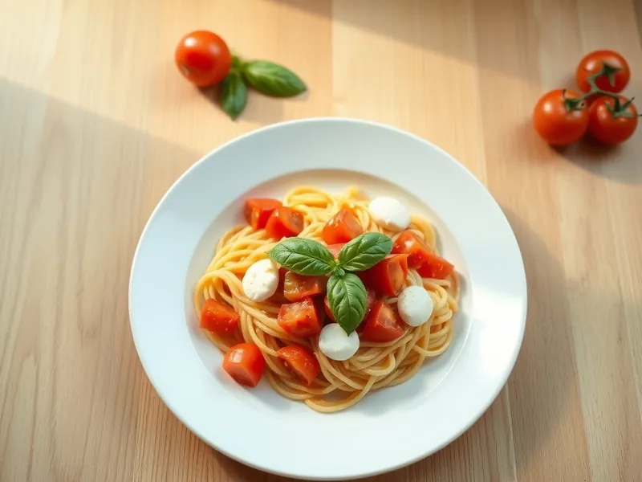

Фото: Иллюстрация ИИ, Cloudflare Workers AI
Паста с помидорами и моцареллой
Горячая паста со свежими помидорами, тающей моцареллой и базиликом
20 мин2 порц.690 ккал на порциюБ 27 · Ж 30 · У 79Итальянская кухня
Продукты на 2 порц.
- Макароны200 г
- Помидоры3 шт
- Моцарелла1 шарик
- Базилик0,5 пучка
- Чеснок1 зуб.
- Оливковое масло2 ст. л.
- Соль2 ч. л.
- Перец чёрный молотый1 щеп.
- Вода2000 мл
Как готовить
- Вскипятите воду на сильном огне, посолите и сварите пасту по инструкции на упаковке, обычно 8-10 минут.
- Помидоры нарежьте кубиками, моцареллу небольшими кусочками.
- Разогрейте масло на сковороде на среднем огне, обжарьте раздавленный чеснок 1 минуту, добавьте помидоры и прогревайте 3-4 минуты, пока они не пустят сок и слегка не размякнут. Посолите и поперчите.
- Откиньте пасту, переложите в сковороду и перемешайте 1 минуту.
- Снимите с огня, добавьте моцареллу и рваный базилик, перемешайте и подавайте, пока сыр тянется.
Совет. Летом берите самые спелые помидоры, зимой лучше заменить их черри: они слаще. Моцареллу кладите в самом конце, иначе она станет резиновой.